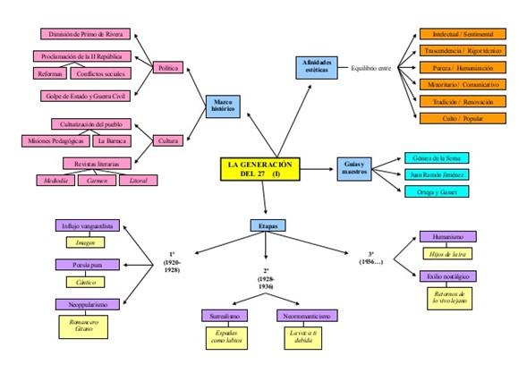

Los esquemas de generación son las estrategias o acciones que se deberán realizarse y tomarse en cuenta en el momento de generar código intermedio.
Los esquemas de generación dependen de cada lenguaje. Tomaremos algunos esquemas de generación del lenguaje C.
Expresiones
Instrucciones de control
Para generar expresiones estas deben representarse de manera más simple y más literal para que su conversión sea más rápida.
Por ejemplo la traducción de operaciones aritméticas debe especificarse una por una, de tal forma que una expresión sea lo más mínimo posible.
Son aquellas que asignan un valor a una variable o una exprecion. ejemplo
X=23 ó Y=expresion
Instruccion de asignacion
Las funciones son un grupo de instrucciones con un propocito en general las cuales pueden recibir parametros, mientras que la estructura es un conjunto de datos elementales interelacionados que realizan siertas operaciones entre ellos
variables y constantes
Las declaraciones de variables y constantes deben separarse de tal manera que queden las expresiones una por una de manera simple.
Los esquemas de generación son las estrategias o acciones que se deberán realizarse y tomarse en cuenta en el momento de generar código intermedio
Son aquellas que permiten modificar o varial el flujo de ejecucion de un programa, existen 3 tipos los cuales son:
Instrucciones condicionales o alternativas
Instrucciones de salto
Instrucciones repetitivas
2.3.1 Variables y constantes.
Las variables y constantes deben separarse de tal manera que queden las expresiones una por una de manera simple.
Por ejemplo int a,b,c; se descompone a int a; int b; intc; respectivamente.
Las declaraciones de variables y constantes deben separarse de tal manera que queden las expresiones una por una de manera simple.
• Por ejemplo int a,b,c;
se descompone a int a;
int b; intc; respectivamente.
Las variables utilizadas en los programas se clasifican en dos tipos:
variables locales y variables globales.
Variables locales:
Aquella que está declarada para el programa o algoritmo completo.
• Para definir variables locales, la definición debe hacerse inmediatamente después de una llave de inicio ({), y la variable deja de existir fuera de la llave de fin(}) que corresponde a la llave de inicio después del cuál fue definida la variable.
Ejemplo:
{
int a,b;
a=5;
b=a + 100;
}
Variables globales:
Aquella que está declarada y definida dentro de una función y sólo es válida dentro de la misma función y no podrá utilizarse en otra parte del programa.
• Una variable global se declara fuera de cualquier función y primero que cualquier función que requiera de ella. Una variable se declara de la siguiente forma:
• tipo identificador1, identificador2..ident n;
Ejemplos:
• Algunos ejemplos de cómo definir variables son los siguientes:
• int alumnos, contador;
• float A,B,C;
• char Letra;
Declaracion de Constantes.
Para declarar constantes en el lenguaje C, sólo basta anteponer el calificador const seguido del tipo de dato que manejará esa constante (int,char,etc), y por último el valor que tomará esa variable.
Ejemplo:
const int k = 12
2.3.2 Expresiones.
En esta función recibe una cadena que representa una línea de código intermedio y toma las medidas oportunas para que ese código se utilice. Estas medidas pueden ser escribir la línea en un fichero adecuado, almacenar la instrucción en una lista que después se pasará a otros módulos, o cualquier otra que necesitemos en nuestro compilador.
Expresiones aritméticas
Son aquella donde los operadores que intervienen en ella son numéricos, el resultado es un número y los operadores son aritméticos. Los operadores aritméticos más comúnmente utilizados son: +, - , * , / y %.
Comenzamos el estudio por las expresiones aritméticas. Lo que tendremos que hacer es crear por cada tipo de nodo un método que genere el código para calcular la expresión y lo emita. Ese código dejará el resultado en un registro, cuyo nombre devolverá el método como resultado.
Para reservar estos registros temporales, utilizaremos una función, reserva. En principio bastar ‘a con que esta función devuelva un registro distinto cada vez que se la llame.
Cada nodo generará el código de la siguiente manera:
Por cada uno de sus operandos, llamara al método correspondiente para que se evalúe la sub expresión. Si es necesario, reservara un registro para guardar su resultado.}
Emitirá las instrucciones necesarias para realizar el cálculo a partir de los operandos.
Para generar expresiones estas deben representarse de manera más simple y más literal para que su conversión sea más rápida.
Por ejemplo la traducción de operaciones aritméticas debe especificarse una por una, de tal forma que una expresión sea lo más mínimo posible.
2.3.3 Instrucción de asignación.
La sintaxis general de la instrucción de asignación es:
nombre_de_la_variable = valor
El valor a la derecha del signo igual puede ser una constante, otra variable o una expresión que combine constantes y variables, pero siempre la variable y su valor deben ser del mismo tipo de dato.
Ejemplos:
edad% = 5
area! = 12.3
nombre$ = “Pedro”
Instrucciones de asignación compuesta
Las instrucciones de asignación compuesta realizan primero una operación en una expresión antes de asignarla a un elemento de programación. En el siguiente ejemplo se muestra uno de estos operadores, +=, que incrementa el valor de la variable del lado izquierdo del operador con el valor de la expresión de la derecha.
Una instrucción de asignación asigna el valor de una expresión a una variable. En general, si la variable que se va a asignar es una propiedad, la propiedad debe ser de lectura y escritura o de sólo escritura; en caso contrario, se produce un error de compilación. Si la variable es una variable de sólo lectura, la asignación debe producirse en un constructor Shared o un constructor de instancia apropiado para el tipo de la variable; en caso contrario, se producirá un error de compilación.
2.3.4 Instrucciones de control.
Esta forma de programación sólo permite resolver problemas sencillos. Para resolver problemas más complejos, nos puede interesar que dependiendo de los valores de los datos, se ejecuten unas instrucciones u otras.
Las instrucciones condicionales nos van a permitir representar éste tipo de comportamiento. Sentencias IF y SWITCH. En otros casos, nos encontraremos con la necesidad de repetir una instrucción o instrucciones un número determinado de veces. En éstos casos utilizaremos instrucciones de control iterativas o repetitivas (ciclos). Sentencias WHILE, DO-WHILE y FOR.
En los lenguajes de programación hay estructuras y operadores que permiten controlar el flujo de la ejecución, estos pueden ser ciclos, saltos, condiciones entre otros. Expresiones booleanas En los lenguajes de programación, las expresiones booleanas tienen dos propósitos principales. Se utilizan para calcular valores lógicos y como expresiones condicionales en proposiciones que alteran el flujo del control, como las proposiciones if-else o do-while. Las expresiones booleanas se componen de los operadores boleanos (and, or y not) aplicados a los elementos que son variables booleanas o expresiones relacionales. Algunos lenguajes permiten expresiones más generales donde se pueden aplicar operadores booleanos, aritméticos y relacionales a expresiones de cualquier tipo, sin diferenciar valores booleanos de aritméticos; si es necesario se realiza una coerción. Saltos En el código de los saltos los operadores lógicos &&, y! son traducidos a saltos aunque estos no aparecen realmente en el código. Por ejemplo la expresión: if (x < 00 x > 200 && x!= y ) x=0; se puede traducir como las siguientes instrucciones: If x < 00 goto L2 If False x > 200 goto L If False x!= y goto L L2: x =0 L: Si la expresión es verdadera se alcanza la etiqueta L2 y se realiza la asignación.
2.3.5 Funciones.
Las funciones pueden reducir a en línea, lo que se hace que expandir el código original de la función.
Las funciones se descomponen simplificando los parámetros de manera individual al igual que el valor de retorno.
Entendemos que es el uso de la lengua que hace un hablante. En simples palabras, las funciones del lenguaje son los diferentes objetivos, propósitos y servicio que se le da al lenguaje al comunicarse, dándose una función del lenguaje por cada factor que tiene éste, en donde la función que prevalece es el factor en donde más se pone énfasis al comunicarse. Diversos lingüistas (Karl Bühler, Roman Jakobson, Michael Halliday ) han propuesto distintas clasificaciones de las funciones del lenguaje: Bühler propuso que existían únicamente tres funciones: La Representativa (por la cual se trasmiten informaciones objetivamente) La Expresiva o emotiva (que expresa sentimientos del emisor) La Conativa, mediante la que se influye en el receptor del mensaje a través de órdenes, mandatos o sugerencias ESTRUCTURAS El código intermedio no es el lenguaje de programación de ninguna máquina real, sino que corresponde a una máquina abstracta, que se debe de definir lo más general posible, de forma que sea posible traducir este código intermedio a cualquier máquina real. El objetivo del código intermedio es reducir el número de programas necesarios para construir traductores, y permitir más fácilmente la transportabilidad de unas máquinas a otras. Supóngase que se tienen n lenguajes, y se desea construir traductores entre ellos. Sería necesario construir n*(n-) traductores. Sin embargo si se construye un lenguaje intermedio, tan sólo son necesarios 2*n traductores. Así por ejemplo un fabricante de compiladores puede construir un compilador para diferentes máquinas objeto con tan sólo cambiar las dos últimas fases de la tarea de síntesis.
2.3.6 Estructuras
Estructura y fases de un compilador (2) Análisis lineal También conocido como: análisis léxico o exploración. Ejemplo, en la proposición de asignación: posicion = inicial + velocidad * 60 Se identifican los siguientes componentes léxicos Identificador (posicion) Símbolo de asignación (=) Identificador (inicial) Signo de suma (+) Identificador (velocidad) Signo de multiplicación (*) Número (60)
12. Estructura y fases de un compilador (3) Análisis jerárquico También llamado análisis sintáctico. Implica agrupar los componentes léxicos en frases gramaticales que el compilador utiliza para sintetizar la salida. Por lo general, las frases gramaticales se representan mediante un árbol de análisis sintáctico. Ejemplo: Proposición de asignación Identificador posición = expresión expresión identificador + expresión inicial expresión identificador * expresión velocidad Número 60
13. Estructura y fases de un compilador (4) La estructura jerárquica de un programa normalmente se expresa utilizando reglas recursivas. Para el ejemplo anterior de la proposición de asignación se tiene: Cualquier identificador es una expresión Cualquier número es una expresión Si expresión1 y expresión2 son expresiones, entonces también lo son: expresión1 + expresión2 expresión1 * expresión2 (expresión1) Proposición de asignación Identificador posicion = expresión expresión identificador + expresión inicial expresión identificador * expresión velocidad Número 60
14. Estructura y fases de un compilador (5) Muchos lenguajes definen recursivamente las proposiciones mediante reglas como: Si identificador1 es un identificador y expresión2 es un identificador, entonces: Identificador1 = expresión2 Si expresión1 es una expresión y proposición2 es una proposición, entonces: while ( expresión1 ) do proposición2 if ( expresión1 ) then proposición2 El análisis lineal (léxico) no es suficientemente poderoso para analizar proposiciones o expresiones recursivas. Cuándo una construcción del lenguaje fuente es recursiva, entonces es factible emplear una gramática libre de contexto para formalizar la recursión.
15. Estructura y fases de un compilador (6) Análisis semántico Revisa el programa e intenta encontrar errores semánticos. Reúne la información sobre los tipos para la fase posterior de generación de código. Un componente importante es la verificación de tipos. Se verifica si cada operador tiene los operandos permitidos. Un real no debe utilizarse como índice de un arreglo. Convertir un número entero a real para algunos operadores. = posicion + inicial * velocidad 60 = posicion + inicial * velocidad ent a real 60 El análisis semántico inserta una conversión de entero a real en el árbol de análisis sintáctico
16. Estructura y fases de un compilador (7) Conceptualmente un compilador opera en fases, cada una de las cuales transforma al programa fuente de una representación a otra. Analizador léxico Programa fuente Analizador sintáctico Analizador semántico Generador de código intermedio Optimizador de código Generador de código Programa objeto Manejador de errores Administrador de la Tabla de símbolos
17. Estructura y fases de un compilador (8) Administración de la tabla de símbolos Registra los identificadores e información referente a ellos. Se tiene un registro por cada identificador. Todas las fases hacen uso de esta tabla. Detección e información de errores En cada fase se pueden encontrar errores. Se debe definir como se deben tratar los errores en cada una de las fases. Las fases de análisis Cambian la representación interna del programa fuente conforme avanza cada una de ellas. Generación de código intermedio Se puede considerar como código para una máquina abstracta. Dicha representación debe ser fácil de producir y fácil de traducir al código objeto. Optimización de código Trata de mejorar el código intermedio de modo que resulte un código máquina más rápido de ejecutar. Generación de código Por lo general se trata de código máquina relocalizable o código ensamblador. Se deben seleccionar posiciones de memoria para cada una de las variables. posicion = inicial + velocidad * 60 Analizador léxico id1 = id2 + id3 * 60 Analizador sintáctico = id1 + id2 * id3 60 Analizador semántico = id1 + id2 * id3 ent a real 60 Generador de código intermedio temp1 = entreal(60) temp2 = id3 * temp1 temp3 = id2 +temp2 Id1 = temp3 Optimizador de código temp1 = id3 * 60.0 temp2 = id2 +temp1 Id1 = temp2 Generador de código MOVF id3, R2 MULF #60.0, R2 MOVF id2, R1 ADDF R2, R1 MOV R1, id1 TABLA DE SIMBOLOS posicion … inicial … velocidad … 1 2 3 4
18. Estructura y fases de un compilador (9) Con frecuencia las fases de un compilador se agrupan en una etapa inicial y una etapa final: Etapa inicial Comprende aquellas fases que dependen principalmente del código fuente. Normalmente incluye el análisis léxico, sintáctico y semántico, la creación de la tabla de símbolos, la generación de código intermedio y cierta optimización de éste. También incluye el manejo de errores correspondientes a cada etapa. Etapa final Comprende aquellas partes del compilador que dependen de la máquina objeto. En general estas partes dependen del lenguaje intermedio, más que del lenguaje fuente. Comprende aspectos de optimización y generación de código, junto con el manejo de errores necesario y las operaciones con la tabla de símbolos. CLR Architecture.PNG
19. Estructura y fases de un compilador (10) Pasadas Consiste en leer un archivo de entrada y escribir uno de salida. Es común que se apliquen varias fases de la compilación en una sola pasada Reducción de pasadas Es deseable tener pocas pasadas dado que la lectura y la escritura de archivos intermedios lleva tiempo. Sin embargo, en ocasiones resulta muy difícil generar código si no se tiene una representación intermedia completa. Por ejemplo: Las instrucciones de tipo goto que saltan hacia delante. En este caso es posible dejar un espacio en blanco y rellenar cuando la información esté disponible 
Bibliografia:
SITE123. (2020). 2.3.- ESQUEMA DE GENERACIÓN. 14/04/2021, de SITE123 Sitio web: https://5e344735705b1.site123.me/unidad-ii-generaci%C3%B3n-de-c%C3%B3digo-intermedio/23-esquema-de-generaci%C3%B3n
Jose Andres Gomes Lopez. (2019). 2.3 Esquema de generación.. 14/04/2021, de Blogspot Sitio web: https://joseandresgomezlopez1997.blogspot.com/2019/09/23-esquema-de-generacion.html